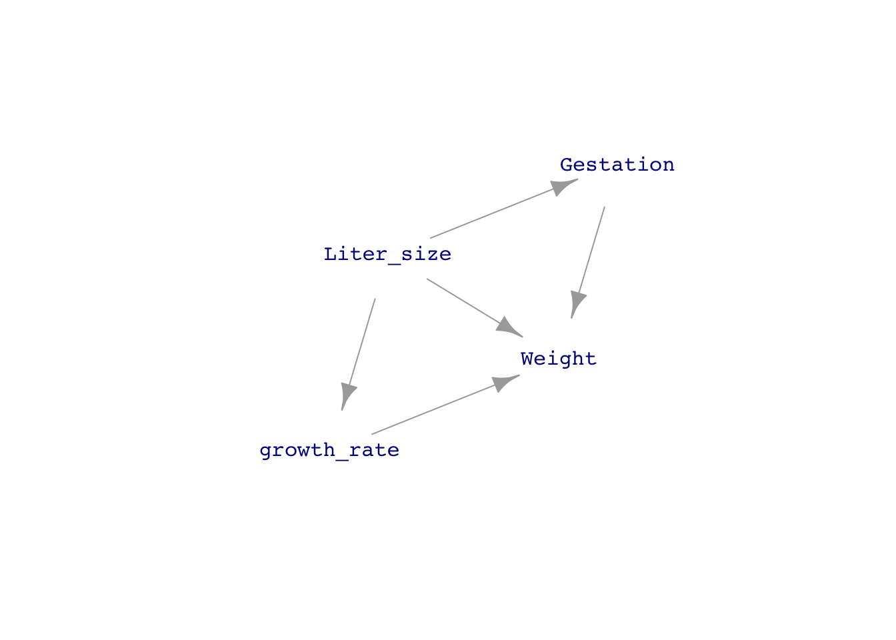
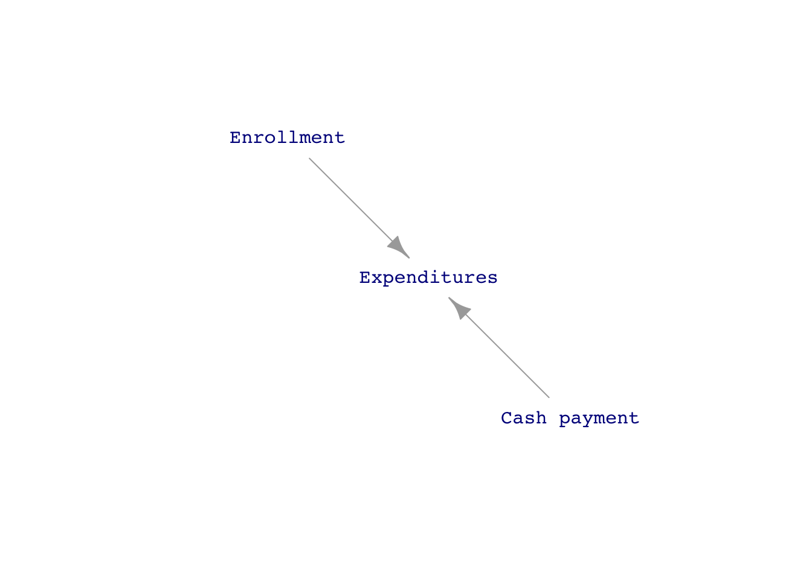
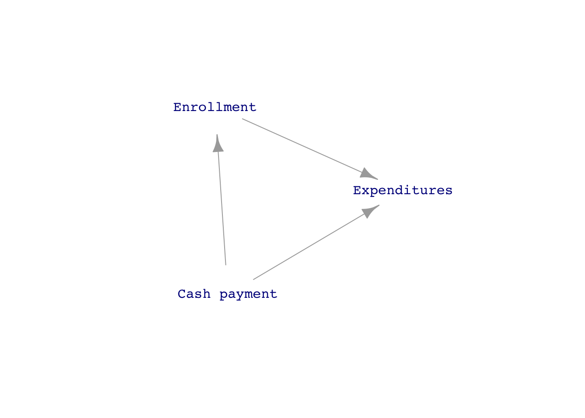
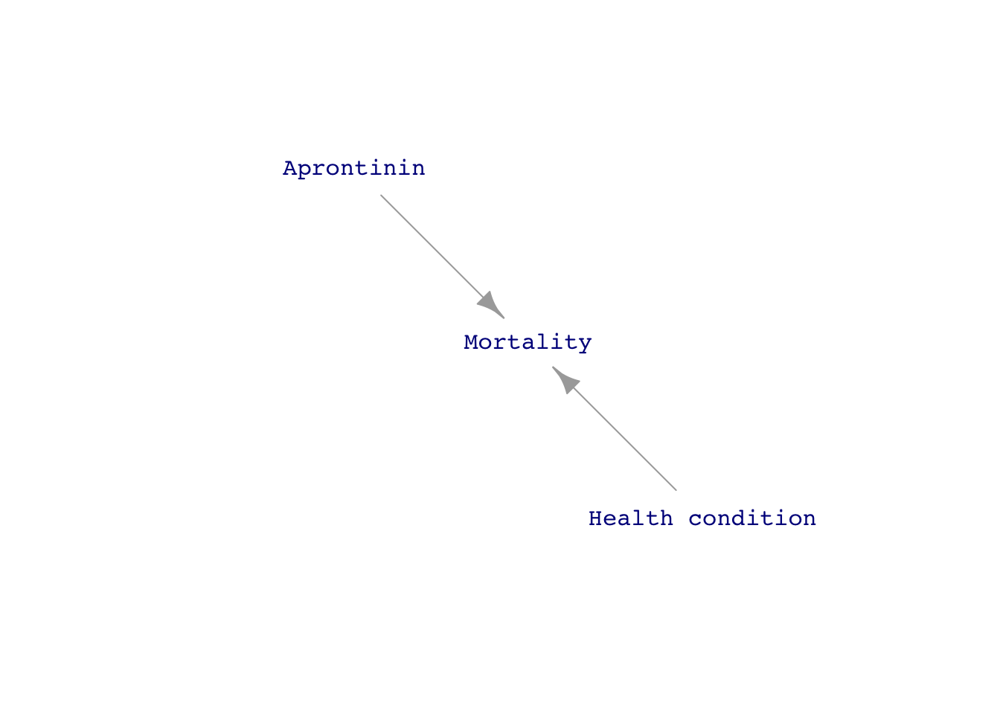
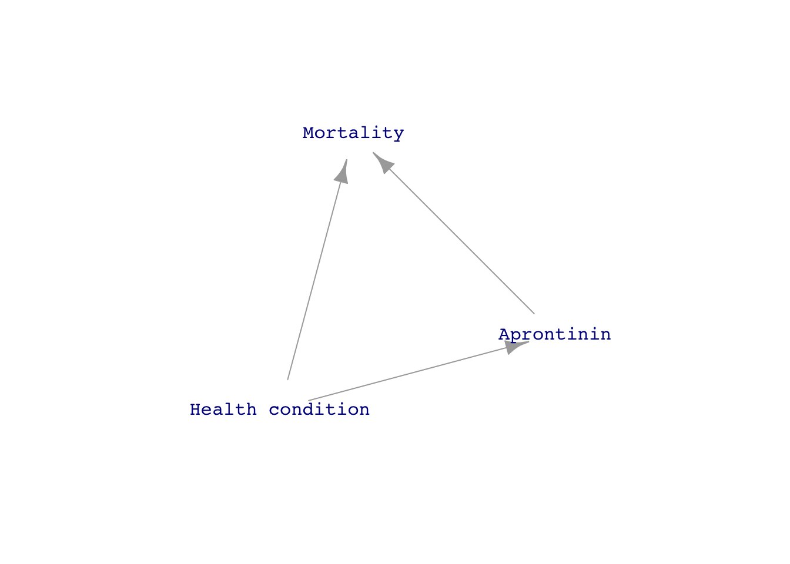

one_trial <- function(n=2) {
vals <- rnorm(n)
tibble(m = mean(vals), s = sd(vals))
}A little more detail
Put the odds and ends here, then sort them out.
Standard errors, margins of error, and confidence intervals
Tiny \(n\) (optional)
When you have a very small sample size—say, \(n=2\)—the values may coincidentally be very close together. Around 1907, William Gosset, a scientist at Guinness, discovered that such coincidences force “twice” to be \(> 2\) in order to produce confidence intervals that reliably cover the mean of the data-generating process. Gosset’s particular interest was in making sense of Guinness’s standard testing protocols, which involve averaging the results from three small batches of beer ingredients. Contacting the leading statisticians of the day, Gosset was told that such small \(n\) is “brewing, not statistics.” Nonetheless, Gosset had to work within Guinness’s testing protocols, which were indeed brewing but still needed statistical interpretation.
Gosset carried out trials by hand, a large number of measurements from a study of criminals’ hand sizes. (They did this kind of thing in 1900.) Each measurement was written on a card. A trial consisted of drawing \(n\) cards from the deck and calculating the mean and standard deviation of the measurements. Using computers, we can simulate the calculation of results from a Gosset-like trials using a simple function that calculates the mean and standard deviation of data from a Gaussian distribution.
We can pick a small \(n\) and running many trials using a candidate value for “twice.”
::: {.callout-warning} ## IN DRAFT
CONVERT the beta to something named twice.
n=10
beta <- 2 / sqrt(n)
Trials <- do(100) * one_trial(n=n) %>%
mutate(left = m - beta*s, right = m + beta*s)
gf_errorbarh(.index ~ left + right, data = Trials, alpha=0.5) %>%
gf_errorbarh(.index ~ left + right,
data = Trials %>% filter(left > 0 | right < 0)) %>%
gf_vline(xintercept = ~ 0, color="blue", inherit=FALSE)
Gosset effectively tabulated the \(\beta\) multipliers
| n | \(\beta\) | \(t = \beta / \sqrt{\strut n}\) |
|---|---|---|
| 2 | 8.98 | 12.7 |
| 3 | 2.48 | 4.30 |
| 4 | 1.59 | 3.18 |
| 5 | 1.24 | 2.78 |
| 6 | 1.04 | 2.57 |
| 7 | 0.92 | 2.44 |
| \(\vdots\) | ||
| 10 | 0.72 | 2.26 |
| 15 | 0.55 | 2.14 |
| 20 | 0.47 | 2.09 |
| 50 | 0.28 | 2.01 |
| 100 | 0.20 | 1.98 |
| 500 | 0.088 | 1.96 |
| 1000 | 0.062 | 1.96 |
You can see that for \(n\) bigger than 10 or 20, the \(t\) multiplier is 2. But for very small \(n\), the t-multiplier can be considerably larger.
You can see the wisdom of brewers here. They made tests by averaging measurements from three small batches of beer. If they had used only two batches, the confidence interval would be almost three times larger than for \(n=3\), making it very hard to conclude anything about whether the tests show the ingredients to be within the quality-control standards.
Gosset’s work was published under the pseudonym “Student,” since Guinness forbade employees to publish under their own names. Statisticians, recognizing the value of the work (and knowing the name behind the pseudonym), came to use the name \(t\), perhaps because tea was considered more refined than “beer.” In many statistics texts, you will see the phrase “Student t” to refer to how Gosset’s work is used.
Interaction
RETURN TO THIS MODEL, but add an interaction.
Mod3 <- lm(list_price ~ hard_paper + num_pages, data = amazon_books)
model_eval(Mod3, hard_paper = c("P", "H"), num_pages=c(200, 400)) hard_paper num_pages .output .lwr .upr
1 P 200 14.52494 -12.641928 41.69182
2 H 200 19.48253 -7.785720 46.75077
3 P 400 18.43605 -8.709404 45.58151
4 H 400 23.39363 -3.847698 50.63497Prediction interval
Demonstration: Simple-minded data analysis shows why
We constructed our model of running time using the “linear least-squares” modeling methodology implemented by the lm() model-training function. For the purpose of demonstration, we’ll show you a simple-minded method to make a prediction. This simple-minded method would give results more or less equivalent to the least squares method if we had an almost infinite amount of data. Since we don’t, the simple-minded method is not as reliable as the least-squares method.
Remember our goal: to predict the running time for a 10km race with a 500m climb. All that we have to inform the prediction is the historical data contained in the Hill_racing data frame. The simple-minded method is … well … simple to understand. We will pull out from the Hill_racing data frame those rows where the race distance is close to 10km and the race climb is close to 500m. For example:
close_rows <- Hill_racing %>%
filter(9 <= distance, distance <= 11,
450 <= climb, climb <= 550)
## the prediction
close_rows %>% summarize(sample_size=n(), pred = mean(time))# A tibble: 1 × 2
sample_size pred
<int> <dbl>
1 52 3523.You might not agree with our definition of “close to 10km” as “between 9 and 11”, and similarly for climb.
To get the confidence interval on this simple-minded prediction, we point out that the value of the mean time is the same as the coefficient from the model time ~ 1. Let’s fit that model formula to the close_rows and look at the coefficient and confidence interval.
simple_mod <- lm(time ~ 1, data = close_rows)
simple_mod %>% coefficients()(Intercept)
3523.481 simple_mod %>% confint() 2.5 % 97.5 %
(Intercept) 3363.901 3683.061To interpret this confidence interval, we can plot the actual running times and compare them to the interval, as in Figure 1
ggplot(close_rows, aes(y=time, x=1)) +
geom_jitter(width=0.2) + xlim(0,2) +
geom_violin(fill="blue", alpha=0.2, color=NA) +
geom_errorbar(aes(ymin=3364, ymax=3683), color="red") +
geom_errorbar(aes(ymin=1665, ymax=5082, x=1.5), color="blue")
Hill_racing with a distance close to 10km and climb close to 500m. The confidence interval on the mean time (shown in red) is narrow compared to the prediction interval (blue) calculated from the whole data frame and the model time ~ distance + climb.
Example: A missed historical opportunity
Sewall Wright (1889-1988) was an American geneticist and statistical pioneer. One of his statistical inventions is the “coefficient of determination” now universally called R2 and a widely used, basic summary of statistical models. In 1921, he invented “path analysis.” One of his “path diagrams” is shown in ?@fig-path-guinea-pig.
[1] "GET THIS FROM p.75 of the *Book of Why*"His path diagrams are directed acyclic graphs, DAGs, augmented with coefficients representing the relative strength of each contributor to a node. He worked out the algebra of the correlation induced by the graph between any two nodes. Then, by measuring the R2 between pairs of nodes, he was able in some cases to work backwards to numerical values for the coefficients.
Wright’s path diagrams are the historically earliest form of our DAGs. In his honor, we’ve constructed a DAG to represent one of his calculations, how much the body weight at birth of a guinea pig increases due to one day longer in the womb. The path diagram Wright imagined is drawn below, though we have left out the coefficients from the display.

We can’t measure the growth rate directly, but we can measure liter size, gestation length, and birth weight. But how can we estimate the direct effect of growth rate when it is confounded with the other causal pathways?
Sewall’s breeding experiments would have provided data like this:
| liter_size | growth_rate | weight |
|---|---|---|
| 5 | 4 | 86 |
| 5 | 5 | 109 |
| 5 | 6 | 110 |
| 5 | 5 | 96 |
| 6 | 4 | 80 |
| 5 | 5 | 99 |
You might think that weight gain per day of gestation can be simply calculated as weight/gestation, but this ignores the fact that weight gain is slow early in gestation and faster as the cubs develop. Instead, using a model weight ~ gestation lets us look at the marginal impact of an extra day of gestation. The coefficients from this model indicates that weight increases by 6.8 grams per extra day of gestation.
lm(weight ~ gestation, data = Pigs) %>% confint() 2.5 % 97.5 %
(Intercept) -41.516920 -23.371468
gestation 6.360907 7.320027But Wright knew that this number was misleading. Larger liters tend to have shorter gestation times. And larger liters produce cubs that weigh less. With more computational power available to us, we can use a simpler calculation to incorporate these facts into the estimation of weight gain per day of gestation:
lm(weight ~ gestation + liter_size, data = Pigs) %>% confint() 2.5 % 97.5 %
(Intercept) 93.676267 114.720621
gestation 4.136628 4.868731
liter_size -19.026171 -16.829170This model pegs the growth rate at about 4.5 grams per day.
Since we generated the data from a DAG, we have the luxury of measuring the actual growth rate used for each liter.
Pigs %>% summarize(rate = mean(growth_rate))# A tibble: 1 × 1
rate
<dbl>
1 4.84Covariates help us deal with confounding! Unfortunately, the statistical bigwigs of the 1920s through 1950s poo-pooed Wright’s ideas about path analysis. They were rehabilitated only the the 1980s.
DAGs and covariates
WHAT CHAPTER DID THE SPENDING and aprotonin examples COME FROM?
The argument, “reduce spending by reducing spending” is very compelling, common sense even. It’s harder to see how reducing spending in one area—the cash payment to people not on the insurance plan—can increase spending overall. I might have been more successful convincing the college budget committee not to eliminate the cash payment if they had understood the language of DAGs. Figure 2 shows two competing DAGs for the situation:


The people on the budget committee saw clearly the direct link between the cash payment and total expenditures and likely would not have disputed a direct link between enrollment and expenditures. But they didn’t imagine a link between the cash payment and enrollment. I did, because I knew of several colleagues who used their spouse’s companies insurance plan, even though it was identical to the college’s plan.
The situation with the drug aprotinin is similar.

